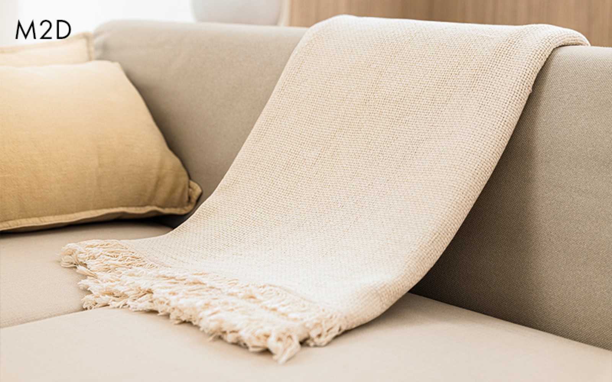
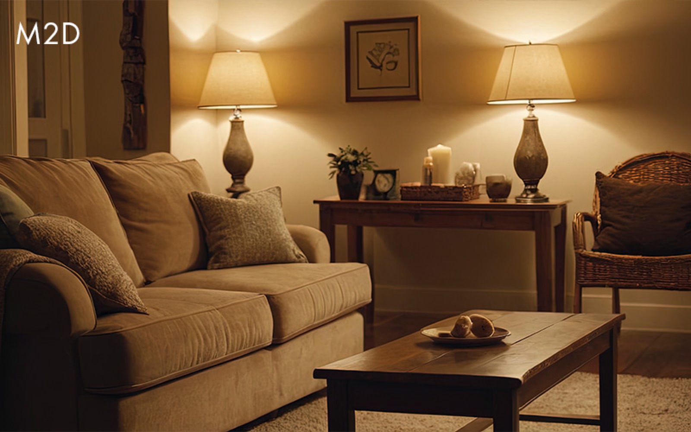
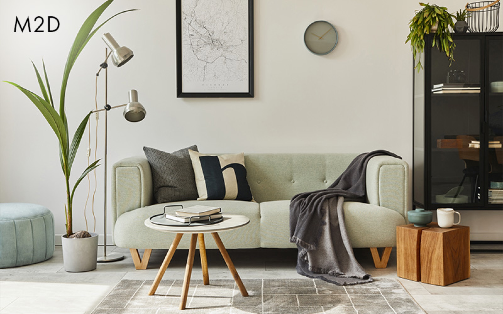
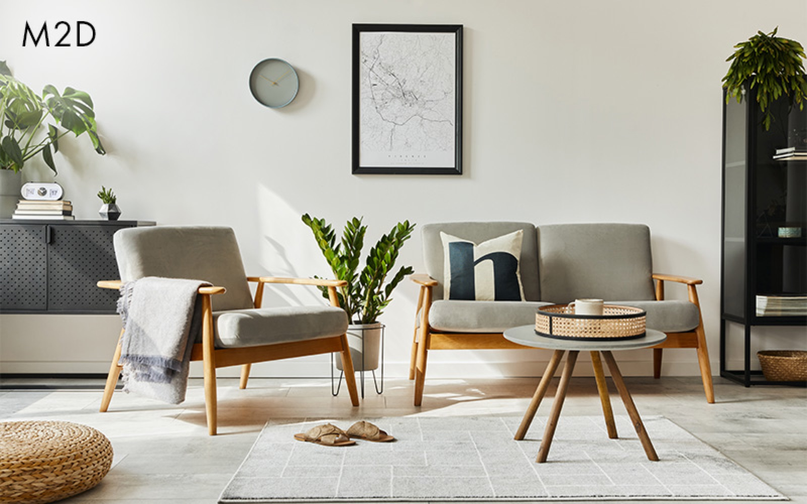

Key Takeaways
Use soft textures and tactile materials to enhance comfort without clutter.
Choose warm lighting that sets the mood while still being functional.
Invest in lounge-worthy furniture that encourages relaxation and style.

A cosy living room is often the heart of your home. It is where you unwind after work, host friends, enjoy family movie nights, or simply relax with a book and a cup of tea. However, many homeowners feel that they have to compromise on aesthetics in order to maximise comfort. The truth is that you can enjoy the best of both worlds by making strategic choices along the way, from conceptualisation to execution.
Here in Singapore, where floor plans can be compact and every detail counts, it is vital to incorporate both function and comfort into your design. This guide shares practical design tips that can help you create a cosy living room that looks just as good as it feels.
1. Layer Soft Textures

Nothing says "cosy" like the sensation of plush, inviting fabrics under your fingers. Consider laying soft textures across different surfaces, like draping a woolen throw over your sofa; setting velvet cushions; or placing a shaggy area rug underfoot. Texture is a great way to enhance your aesthetics without adding unnecessary clutter, giving your living room some much-needed warmth.
For many HDB flats, where space may be limited, textiles are a non-intrusive way to enhance comfort as well. Linen, chenille, and cotton are breathable and suitable for Singapore’s climate, while knitted or faux fur throws can be brought out during cooler months or rainy days.
If your colour palette is fairly neutral, playing with textures can also keep things visually engaging. This is a key element of good residential interior design—making every layer count.
2. Choose Warm Lighting

Lighting has a significant impact on the overall ambience of your home. Harsh white or blue-toned lighting can feel sterile and clinical, while warm lighting sets the tone for relaxation. In your living room, aim for a mix of general, task, and ambient lighting. Use ceiling-mounted fixtures for brightness, but balance them with table lamps or wall sconces that offer a softer glow.
Dimmable lights are especially useful as they allow you to adjust the atmosphere throughout the day, from energising in the afternoon to tranquil by evening. Lampshades made of fabric, paper, or frosted glass can also help diffuse light, contributing to a more comfortable environment.
When planning an interior design renovation, it pays to incorporate lighting considerations early in the design process. This ensures that electrical points and built-in lighting features complement your styling goals, rather than requiring costly adjustments later.
3. Mix Materials to Add an Extra Dimension

Mixing materials is one of the most effective ways to create a cosy living room. Combining leather, metal, wood, glass, and fabric introduces variation in tone and texture that adds visual richness.
For example, a wooden coffee table often pairs well with a boucle armchair and metal floor lamp. Even something as simple as a rattan tray on a marble surface can elevate the feel of your room. The key is to mix without overwhelming, striking a balance that reflects your personal style.
This technique is particularly helpful in BTO interior design, where uniform layouts can sometimes lack character. Strategic use of contrasting materials breaks visual monotony and adds depth without overcrowding the space.
4. Choose Furniture That Puts You in the Mood to Lounge

One of the hallmarks of a cosy living room is its ability to make you want to lounge in it the moment you sit down. To that end, choose furniture that feels and looks inviting, such as sofas with supportive cushions, armchairs with soft upholstery, and ottomans that double as extra seating or footrests.
Low, wide seating helps to ground the space and makes it feel more intimate. Modular sofas also work well in small Singaporean homes, offering flexibility without compromising on style. For added function, look for pieces with built-in storage to reduce clutter—a must in many HDB flats.
When planning your interior design renovation, think beyond the floor plan, and consider how you want to feel in the space. Does it invite relaxation? Does it support how you live? The furniture you choose will shape these answers.
Creating a cosy living room is all about making the right choices, both in design and functionality. From layering soft textures and using warm lighting, to selecting the right mix of materials and furniture, every detail contributes to the feel of the space. These elements will be able to turn your living room into a relaxing sanctuary where you can put aside the worries for the day and allow yourself some much-needed peace and tranquility.
Here at M2D Design and Consultancy, we specialise in creating spaces that tick both boxes in style and functionality. With extensive experience in shaping a wide range of homes in Singapore, you too can bring your vision to life with our help.
For more information about our services, please contact us today.